모든재료요약 : 무역선에서 중범점진_용맹재료
(90)홍조빛해저단괴
(205)심해초줄기
(180)순수한 암초 조각
(45)순수한 진주 결정
(180)파도빛이 감도는 규격 각목
콕스해적단의유물[연결]
(120)콕스해적단의유물 전투
(30)콕스해적단의유물 상급
(60)콕스해적단의유물 하급
(144)짙은 파도빛이 감도는 규격각목
(300)강화된 섬나무 증착합판
(150)대양의 견고한 현철
(30)빛나는 코발트 주괴
(400)달의 비늘이 새겨진 합판
(180)달의 핏줄이 새겨진 아마포
(42)심해의 눈물
(35)화려한 암염 주괴
(35)화려한 진주 결정
선원고용
선원성장스탯정보
3
4
5
6
7
8
9
0
▢ 까마귀 둥지, 라비니아 퀘스트 (무역선 증축 재료)
▢ 까마귀 둥지 파킹 위치
▢ 오킬루아 일퀘 버스받는 법
1. esc - 커뮤니티 클릭 - 대화그룹 클릭 - 청새치 주점 입장, 채팅설정에서 대화그룹 체크
채팅보면서 버스모집글확인 - 귓말해서 해당채널로 이동후 파티가입 (오킬루아에 대기)
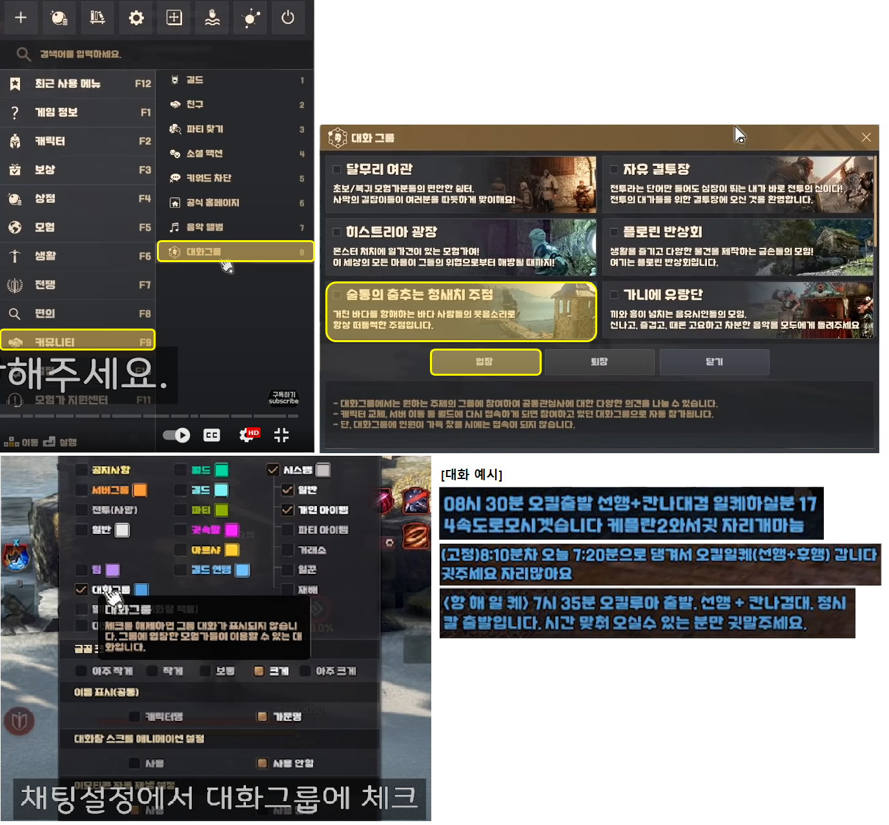
2. 버스퀘스트는 선행 3개, 후행 3개 (칸나검) 로 나뉘어져 있음.
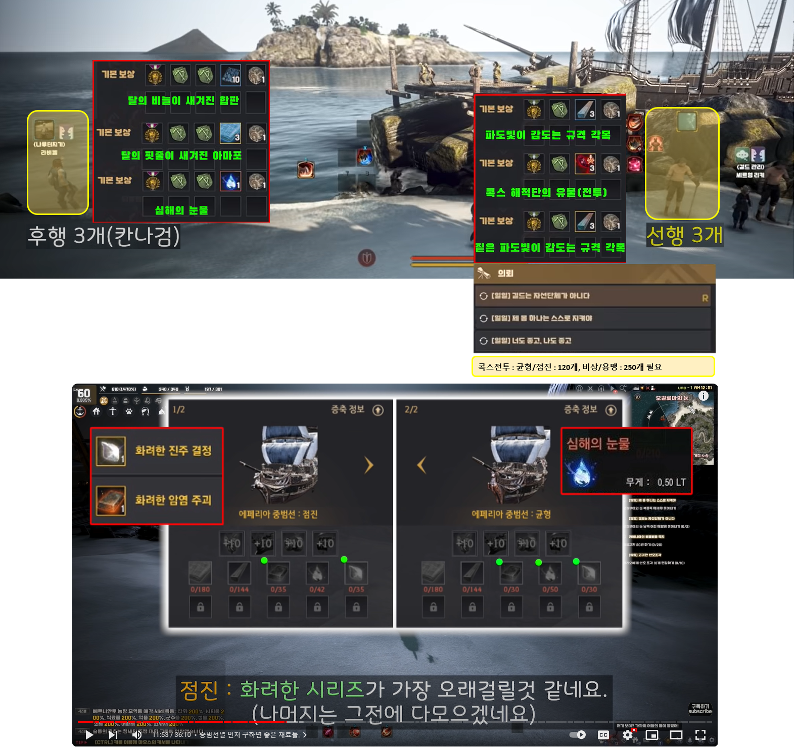
3. 오킬일퀘로 모이는 오킬리아 기념 주화 교환 퀘스트 (재료)
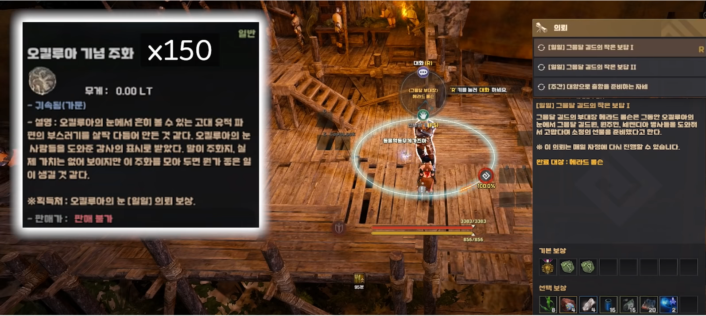
▢ (개량형) 경범선, 스탯정보와 무역선 증축식
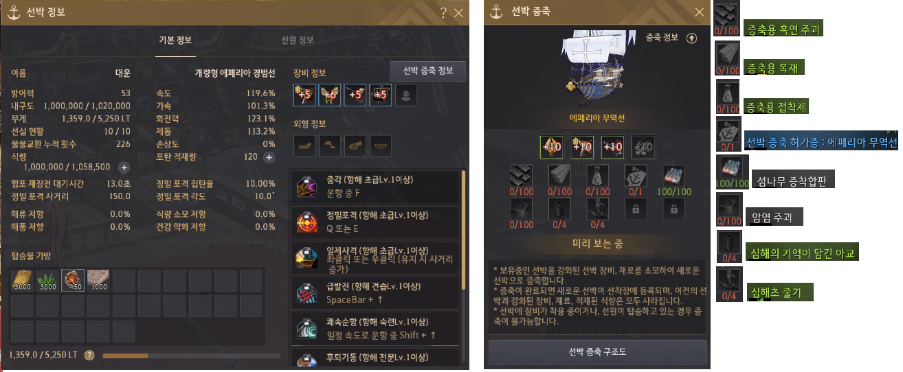
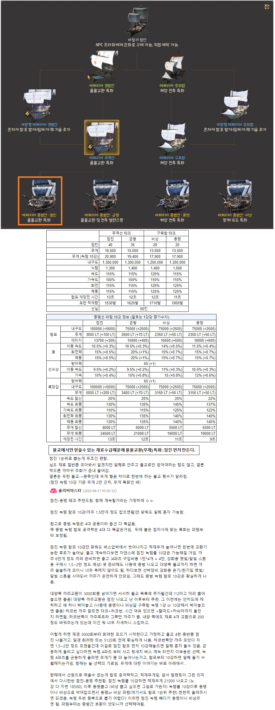
▢ 무역선에서중범점진_용맹재료_모든재료요약
(90)홍조빛 해저 단괴 : 오킬루아의 눈 [일일] 어린 해달 상인들을 위해, 산호조각 10개 전달 : 홍조빛 해저단괴2개, 오킬루아 기념주화1개.
(205)심해초 줄기 : 오킬루아의 눈 [일일]고귀한 산호초 조각 (오색빛 산호 조각 1개 전달하기)[오색산호가 아닌 점박이산호 또는 나팔산호를 채집할때 부수적으로 얻을 수 있다]
(180)순수한 암초 조각 : 오킬루아의 눈 [일일]라비켈의 시험 (물물교환 5회)
순수한 진주 결정 2개, 심해의 기억이 담긴 아교 8개, 순수한 암초 조각 8개 중 ★택1★
(45)순수한 진주 결정 : 오킬루아의 눈 [일일]라비켈의 시험 (물물교환 5회)
순수한 진주 결정 2개, 심해의 기억이 담긴 아교 8개, 순수한 암초 조각 8개 중 ★택1★
선행퀘(180)파도빛이 감도는 규격 각목 : 오킬루아의 눈 [일일] 길드는 자선 단체가 아니다 (남쪽 어린 해왕류 처치 2마리)
확정 : 파도빛이 감도는 규격 각목 3개, 오킬루아 기념주화1
선행퀘(120)콕스 해적단의 유물 전투 : 해양괴수 처치, 물물교환(4,5단계 교역품), [탐색]섬 주민의 요청 랜덤
오킬루아의 눈의 병사 [일일]제 몸 하나는 스스로 지켜야 (북동쪽 해카루 쫒아내기)
확정 : 콕스 해적단의 유물(전투) 3개, 오킬루아 기념주화1
(30)콕스 해적단의 유물 상급 : 해양괴수 처치, 물물교환(4단계 교역품), [탐색]섬 주민의 요청 랜덤
오킬루아의 눈 [일일]세렌디아 병사들을 위한 마음 (물물교환 10회), [일일]라비켈의 시험 (물물교환 5회) 끝나고 수주
강화된 섬나무 증착합판 10개, 유물 상급 1개 ★택1★, 오킬루아 기념주화1
(60)[교역출]콕스 해적단의 유물 하급 : 해양괴수 처치, 물물교환(2단계 교역품), [탐색]섬 주민의 요청 랜덤
선행퀘(144)짙은 파도빛이 감도는 규격각목 : 오킬루아의 눈 [일일]너도 좋고, 나도 좋고 (북서쪽 표류추적자 쫒아내기)
확정 : 짙은 파도빛이 감도는 규격각목 3개, 오킬루아 기념주화1
후행퀘(300)강화된 섬나무 증착합판 : 오킬루아의 눈 [일일]세렌디아 병사들을 위한 마음 (물물교환 10회), [일일]라비켈의 시험 (물물교환 5회) 끝나고 수주
강화된 섬나무 증착합판 10개, 유물 상급 1개 ★택1★, 오킬루아 기념주화1
(150)[교역출]대양의 견고한 현철
(30)[교역출]빛나는 코발트 주괴
후행퀘(400)달의 비늘이 새겨진 합판 : 오킬루아의 눈 [일일] 그믐달 길드의 칸디둠 사냥꾼
확정 : 달의 비늘이 새겨진 합판 10, 오킬루아 기념주화1
[일일]길드는 자선 단체가 아니다, [일일]제 몸 하나는 스스로 지켜야, [일일]너도 좋고, 나도 좋고 의뢰 완료후에 수주 가능
[일일] 그믐달 길드의 칸디둠 사냥꾼, [일일] 그믐달 어린 칸디둠 사냥꾼(달의 비늘이 새겨진 합판 5개) 중 택1
후행퀘(180)달의 핏줄이 새겨진 아마포 : 오킬루아의 눈 [일일]그믐달 길드의 나인샤크 사냥꾼
확정 : 달의 핏줄이 새겨진 아마포 3개, 오킬루아 기념주화1
[일일]길드는 자선 단체가 아니다, [일일]제 몸 하나는 스스로 지켜야, [일일]너도 좋고, 나도 좋고 의뢰 완료후에 수주 가능
[일일]그믐달 길드의 나인샤크 사냥꾼, [일일]그믐달 어린 나인샤크 사냥꾼(달의 핏줄이 새겨진 아마포 1개) 중 택1
후행퀘(42)심해의 눈물 : 오킬루아의 눈 [일일]그믐달 길드의 검은무쇠이빨 사냥꾼
확정 : 심해의 눈물 1, 오킬루아 기념주화1
[일일]길드는 자선 단체가 아니다, [일일]제 몸 하나는 스스로 지켜야, [일일]너도 좋고, 나도 좋고 의뢰 완료후에 수주 가능
[일일]그믐달 길드의 검은무쇠이빨 사냥꾼, [일일]그믐달 길드의 검은무쇠이빨 사냥꾼(심해의 원석 1[2개 간이연금시 눈물1개]) 중 택1
(35)[교역출:3000부터뜸]화려한 암염주괴
(35)[교역출:3000부터뜸]화려한 진주 결정
▢ 무역선에서 중범 점진 만들때 필요한 파템 강화 방법
흑룡선수상, 개량형 장갑, 메이나 함포, 비층 바람 돛 각각 만들때 4종을 사서 재료넣고 에페리아에서 제작돌려야함.

1~5강은 온기를 품은 블랙스톤 : 까마귀 주화 10주화로 구매, 2~4단계 해상 교역품 물물교환
6~10강은 한기가 서린 블랙스톤 : 까마귀 주화 20주화로 구매, 2~4단계 해상 교역품 물물교환
스탯넣고 직강하자. 하강이 없다.
▢ 강화 정보
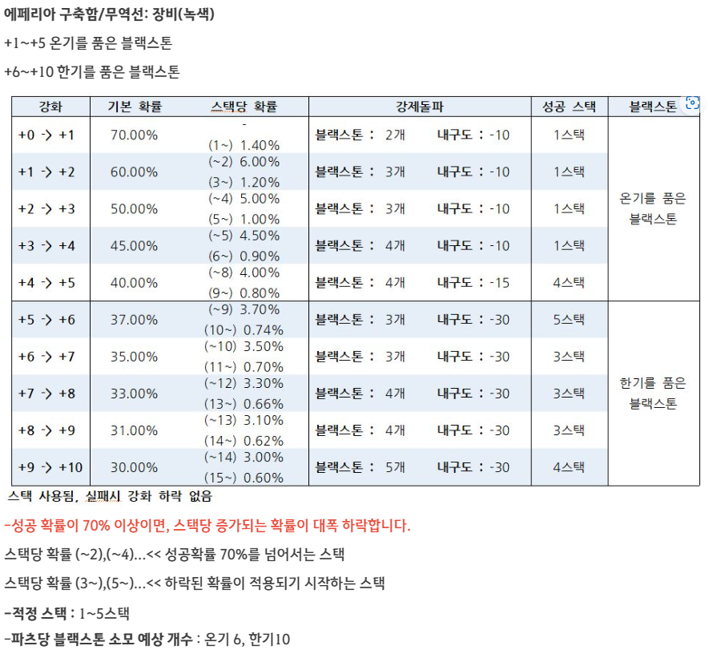
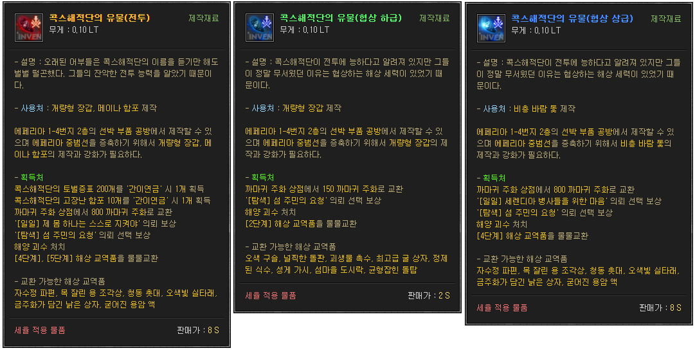
점진/용맹 필요개수 => 전투 : 120 / 250, 상급 : 30 / 30, 하급 : 60 / 60
해양괴수 처치
탐색이란? : 쿨타임 20분,
탐색을 누르면 [탐색]섬 주민의 요청 [탐색]섬 아이의 요청
퀘스트로 까마귀주화 획득, 홍조빝 해저 단괴, 파도빛이 감도는 규격각목, 빛나는 코발트 주괴
[탐색]표류자의 요청 퀘스트로 심해초 줄기, 순수한 암초 조각(O), 코발트 주괴(X)
퀘완료 위치
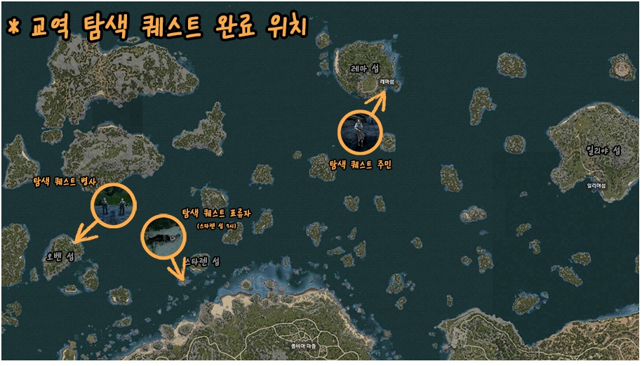
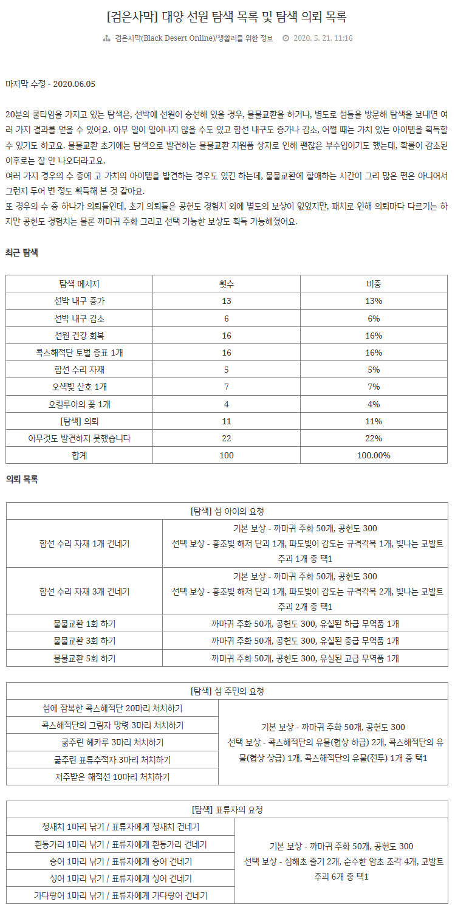
https://www.kr.playblackdesert.com/ko-KR/Forum/ForumTopic/Detail?_topicNo=26995
선원관리
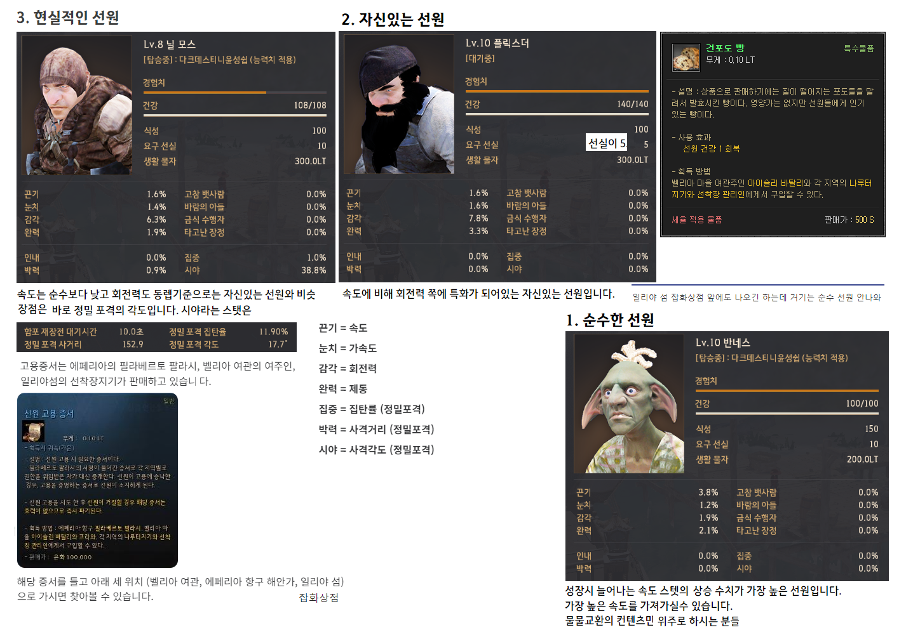
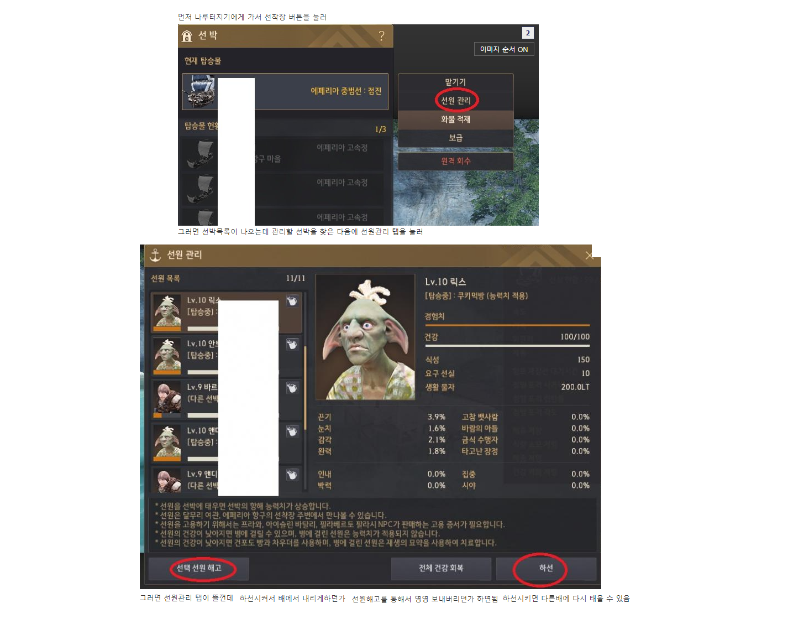